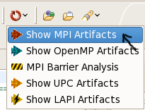

Running the MPI Tools within the Parallel Language Development Tools
To run the PTP PLDT MPI Tools,
create a project, and set the preferences and include paths as described in
Setup for PTP MPI Tools.
The Parallel Language Development Tools should work on Standard Make C projects as well, and
on C++ projects (Standard Make and Managed Make). The description here is for
a Managed Make C Project.
Note: the terms "Managed Make" and "Standard Make" projects were more visibly used in CDT 3.1.
They are still there in CDT 4.0 and later, but the names are usually hidden. By default a project "New C project"
will create a makefile for you, and thus is a "Managed Make" project; if you create a "Makefile project"
then that is what was formerly called a "Standard Make" project. Confused enough? Good.
- Within the project, create a C file that includes MPI code. A sample is testMPI.c
If you used the PLDT new project wizard to create a "Hello World" MPI project, then you probably already have one.
Note: A sample C++ file with MPI calls
is testMPIcpp.cpp.
A sample C++ file with MPI calls in ordinary C style
is helloMPI_c_style.cpp.
- In the Project Explorer View, select the source file to analyse, to find the MPI artifacts.
To do this, click on the source file in the Project Explorer on the left to highlight it.
Click the "Show MPI Artifacts" menu item in the PLDT icon menu in the tool bar.

(Note: if it complains that a source file is not selected the first time, select it again and retry.)
The workbench with the selection and menu item is shown below:
- The MPI Artifact View is opened, if it was not present.
It is populated with MPI artifacts found.
If no artifacts are found, check that:
- The MPI preferences page lists the include file for the MPI installation
that your source code uses. This list is how the analysis determines what is
an "MPI artifact."
- Your project properties have the include path (the same one listed
in the MPI preferences page) listed.
Note that the MPI analysis may require this even if
the build procedure - such as a build command like 'mpicc' -
implicitly does this include for you during build.
- OR assure that the "Recognize artifacts by prefix (MPI_) alone" checkbox is checked in the
MPI preferences.
- Double click on any line in the MPI Artifact View
to navigate the editor to that line in the source file.
- Hover over the MPI Artifact identified in the source file
(by blue squiggles) to see additional information about that
function call, for example.

- Rows in the MPI Artifact View can be sorted by any of the columns.
Click on the column heading to sort.
- Click the "Clear MPI Artifacts Markers" button (red X)
in the tool bar of the MPI Artifact View to remove all
the MPI artifacts.

- You can run the analysis on another file and its markers
will be added to the view.
- You can run the analysis on more than one file (multiple selection)
or a container (folder or project), to analyse more than one file at a time.
Click on a project or a folder, then select the
"Show MPI Artifacts" action
to run it on all C source files in that folder.
- Content Assist
Type an incomplete MPI function name e.g. "MPI_Ini"
and hit Ctrl-Space. The information that is shown
is populated with CDT completions including argument
types, but in addition, the PTP-MPI tools also provide
specific information about actual MPI constant values, etc.
where appropriate, and a yellow popup with additional
textual descriptive information about the function.
Pick the one you want with the arrow keys or the mouse, to add the API to your source file.

- Context sensitive help
Also, if F1 is pressed when the cursor is within
a function name, a help view appears which shows additional information.
(In Linux press Ctrl-F1; in Mac Use Help button or use menu Help > Dynamic Help)

Help View appears:

Click on the function name to see more information:

See also the MPI Barrier Analysis explanation.
See also MPI Code Templates.
See also the OpenMP setup information
or the OpenMP run information.
Back to Top | Back to Table of Contents